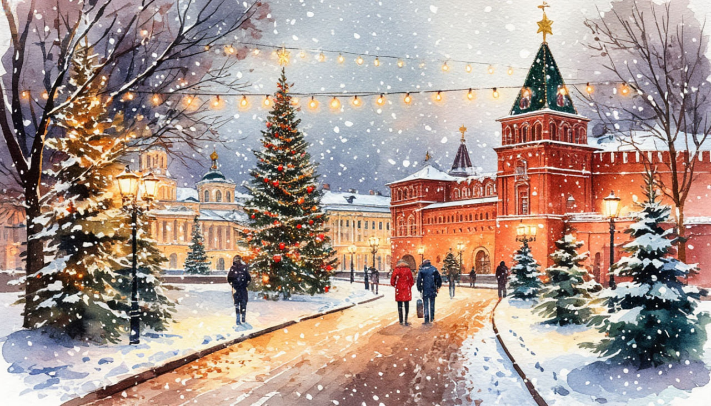

Новогодняя история.

Даты тура:
с 30 декабря 2026 года (ср) по 3 января 2027 года (вс)Стоимость тура:
- 34 000 р. - взрослый
- 33 800 р. - пенсионеры/студенты/школьники (до 13 лет)
- 39 000 р./чел - одноместное размещение
По программе:
- - Обзорная автобусно-пешеходная экскурсия «Волшебство новогоднего Минска»
- - Мир и несвиж
- - Гродно
- - Новогодняя экскурсия в Сулу (за доп. плату)
Программа тура:
1 день: Отправление
- 13-00- выезд из Костромы от ТРЦ "РИО" (Ул. Магистральная, 20), правый угол от центрального входа
2 день: Мир и Несвиж
- Прибытие в Несвиж.
- Завтрак в кафе города.
- Экскурсия по Несвижу, посещение Несвижского замка по входным билетам.
- НЕСВИЖ - ГОРОД ЛЕГЕНД И ТАЙН. Знаменитый Несвиж - один из важнейших исторических городов Великого Княжества Литовского и родовое гнездо могущественных Радзивиллов. Главное украшение города - величественный Несвижский дворцово-парковый комплекс, включённый в список Всемирного наследия ЮНЕСКО. Экскурсия по Несвижу с профессиональным гидом позволит каждому путешественнику погрузиться в историю города и дворцово-паркового комплекса, узнать о его владельцах, архитектуре и удивительных событиях, связанных с этим местом. Зимой особенно чарующе выглядят старинные стены дворца и заснеженный парк, где за каждым поворотом будто прячется новая легенда.
- Мы познакомимся с дворцово-парковым ансамблем, увидим оборонительные сооружения, которые когда-то превращали дворец в неприступную крепость, и прогуляемся по местам, овеянным таинственными историями и мифами. Завершит знакомство с Несвижем Фарный костёл XVI века - первый в Восточной Европе памятник архитектуры в стиле барокко и усыпальница князей Радзивиллов.
- Далее мы отправимся в Мир - небольшой старинный городок, где находится величественный Мирский замок XVI века, внесённый в список Всемирного наследия ЮНЕСКО. Зимой замок особенно впечатляет: его мощные башни и стены на фоне холодного неба словно переносят нас в настоящую средневековую сказку. Мы познакомимся с историей этого уникального памятника оборонительного зодчества и сможем самостоятельно прогуляться по территории замка, почувствовав атмосферу далёких эпох. Внешний осмотр Мирского замка. Прогулка с гидом по территории Замкового комплекса.
- Отправление в Барановичи. Заселение в отель "Горизонт". Свободное время на празднование Нового Года.
За дополнительную плату (по желанию):
- - Новогодний банкет (БРОНИРОВАНИЕ СТРОГО ЗАРАНЕЕ) Стоимость уточняется.
3 день: Гродно
- Завтрак в отеле
- Отправление в Гродно.
- Гродно зимой - это особенная атмосфера: старинные улочки, праздничные огни, нарядные площади и заснеженные виды на Неман. В преддверии Нового года город словно превращается в настоящую зимнюю сказку! Наше знакомство с Гродно начнётся с Замковой горы - места, с которого начиналась история города. Здесь мы увидим Старый замок, построенный для короля Стефана Батория в XVI веке, и узнаем, какие тайны хранят его древние стены. У Нового замка поговорим о важных событиях белорусской истории и почувствуем атмосферу одного из самых значимых исторических мест Гродно.
- Во время прогулки заглянем к Борисоглебской (Коложской) церкви XII века - уникальному памятнику древней архитектуры, пережившему века. А затем отправимся к величественному костёлу Святого Франциска Ксаверия. Празднично украшенный Гродно особенно красиво смотрится в зимнем убранстве, а внутреннее оформление храма впечатляет своей красотой и роскошью.
- Нас ждёт прогулка по уютным старинным улочкам, нарядным площадям и холмам над Неманом. Праздничная иллюминация, новогоднее настроение и архитектура старого города создадут идеальный фон для зимних фотографий
- Гродно в новогодние праздники - это возможность совместить путешествие, историю и настоящее праздничное настроение. Прогуляемся по городу, узнаем его удивительные истории, полюбуемся зимними видами и зарядимся атмосферой наступившего Нового Года!
- Дегустационный обед из блюд Белорусской кухни в кафе города!
- Отправление в Барановичи.
4 день: Минск
- Завтрак в отеле. Освобождение номеров. Отправление в Минск.
- Обзорная автобусно-пешеходная экскурсия «Волшебство новогоднего Минска» - позволит познакомиться с основными достопримечательностями одного из самых красивых европейских городов, поражающего любого путешественника особым домашним уютом и теплотой, потрясающей архитектурой, широтой улиц и проспектов. Особое впечатление производят празднично украшенные улицы и проспекты, над оформлением которых ежегодно трудится целая команда дизайнеров. Вы увидите самые важные достопримечательности: Троицкое предместье - исторический центр старого города со старинными, будто игрушечными домиками XVIII-XIX веков, Верхний город с Ратушей и кафедральным собором Святого Духа, Костел Св.Девы Марии, торговые ряды. Вас поразят живописные изогнутые улочки, уютные кафе, дома ремесленников, галереи художников. Особое впечатление произведут архитектурные памятники исторической застройки старого города с множеством малых форм, возле которых обязательно надо сделать фото на память.
- Динамичный современный облик Минска. Уникальная знаковая архитектура главной улицы - памятника градостроительного искусства XX века - проспекта Независимости. Площадь Победы и Национальная библиотека, включенные в список наиболее выдающихся архитектурных строений современности.
- Свободное время в ТЦ "Столица", который расположен в самом центре Минска, на площади Независимости. Вся ее пешеходная часть - это кровля подземного торгового центра. В радиусе 300 метров находится большое количество административных зданий: Дом правительства, Минский городской исполнительный комитет, педагогический и Белорусский государственный университеты, костел Святых Симеона и Елены, четырехзвездочный отель «Минск», главпочтамт, жилые постройки. Обед самостоятельно, в свободное время.
- ИЛИ для желающих за доп. плату: новогодняя экскурсия в парке средневековой истории "Сула" с обедом "Шляхецкае Паляванне" - 4000 руб./чел. (при наборе группы от 20 чел.). Строго при бронировании тура.
- Усадебно-парковый комплекс “Парк истории Сула”, созданный на месте усадьбы шляхетского рода Ленских, покоряет красками природы и старинными постройками, получившими после реставрации современное назначение, но и сохранившими обаяние прежних архитектурных форм.
- Интерактивная новогодняя экскурсия + обед. У въезда в усадьбу нас встретят с музыкой конный эскорт всадников в исторических костюмах. А затем начинается наше путешествие сквозь века.
5 день:
Прибытие в Кострому в первой половине дня (ориентировочно)
В стоимость тура входит:
- - проживание в гостинице*
- * Гостиница "Горизонт" 3*
- - питание: 3 завтрака + 2 обеда
- - услуги гида-экскурсовода
- - экскурсионная программа
- - автобусное обслуживание по программе тура
Дополнительно оплачиваются (по желанию):
- - Новогодний банкет, для желающих. Стоимость и программа уточняются (Строго при бронировании тура)
- - Новогодняя экскурсия в парке средневековой истории "Сула" с обедом "Шляхецкае Паляванне" - 4000 руб./чел. (при наборе группы от 20 чел.)
- Для бронирования необходимы данные паспорта РФ и свидетельства о рождении, если с вами путешествуют дети
- Предоплата – 50% от стоимости тура. Остаток за 30 дней до даты выезда.
- Любой тур можно оформить не выходя из дома. Подробнее: Тут
Стоимость тура не зафиксированы и могут быть изменены в большую или меньшую сторону в зависимости от уровня спроса в любой момент.
Время начала экскурсий и их порядок указано ориентировочно.
Фирма-исполнитель оставляет за собой право замены экскурсий без уменьшения общего объема экскурсионной программы.
По вопросам бронирования обращайтесь: